서울대학교 데이터사이언스대학원 정형수 교수님의 "데이터사이언스 응용을 위한 빅데이터 및 지식 관리 시스템" 강의를 필기한 내용입니다.
JOIN 이 필요한 이유
- Relational algebra 에서는 entity 와 relation 으로 table 을 분리하기 때문에 (normalize) 이것이 종합된 데이터를 조회하기 위해서는 다시 합침
- Normalize 하는 이유는 data redundancy 를 줄이기 위해
- Data redundancy 는 또한 update 를 지연시키는 원인이 된다.
- Snowflake Schema 에서 fact, dimension table 이 각각 쪼개져있는 것을 생각하면 됨
- 다만 redundancy 가 줄어드는 대신 JOIN 비용이 든다.
- 본 강의에서는 binary (즉, table 2개만 join 하는), inner (즉, match tuple 만 반환하는), equijoin (즉, exact match 만 수행하는) 에 대해서만 다룬다.
- 이게 가장 기본적이고 다른 join 들로 확장할 수 있다고 한다.
JOIN Operation
Terminology
- Outer table 은 JOIN 시 먼저 읽는 table 로, 오른쪽 피연산자라고 생각하면 된다.
- 그리고 Inner table 은 JOIN 으로 연결되는 table 로, 왼쪽 피연산자라고 생각해도 된다.
- 즉, 일 때 이 Outer table 이 되고 이 Inner table 이 되는 것.
Output
- 일단 JOIN operation 의 output 은 기본적으로는 Join attribute 가 match 되는 두 table 의 두 tuple 에 대해, 두 tuple 의 concat 이 output 이 된다.
- 좀 더 수학적으로 말하면,
- 두 table 와 에 대해, 각 table 에 속한 두 tuple , 이 만약 이라면 이 그의 결과가 된다.
- 주의할 점은 tuple 이 결과값이 된다는 것이다:
- 뒤에서도 배우겠지만 Volcano model 에서는 한번의 operation 에서는 하나의 tuple 이 결과값이 되기 떄문.
Data
- Tuple 이 결과값이 된다는 것은 알겠는데, 그럼 이 tuple 의 representation 은 어떻게 될까.
- Early materialization: 두 tuple 의 전체를 들고다니는 방식
- 이때는 tuple 의 data 전체를 query plan 내내 들고다니므로 query 중간 결과물에 대해 데이터의 사이즈가 크다는 문제가 있다.
- 다만 그래도 이미 필요한 attribute 의 값들을 query 를 실행하는 동안 다 알고 있기 때문에 다시 table 에서 값을 가져올 필요가 없다.
- 즉, JOIN operation 을 호출한 놈은 이미 tuple 전체를 들고 있기 때문에 이 record 의 다른 attribute 가 필요할 때 추가적으로 table 에서 갖고올 필요가 없다.
- Late materialization: 두 tuple 의 join attribute 와 RID 를 갖고다니는 방식
- 당연히 이때는 중간 데이터 사이즈는 작지만, 특정 attribute 가 필요할 때마다 table 에서 갖고와야 하는 문제가 있다.
- 적은 수의 attribute 를 사용하는 OLAP, 그리고 그에 최적화된 columnar store 에 대해 강점을 가진다고 한다.
- 또한 join selectivity 가 낮으면 이것을 사용하는 것이 좋다. 즉, JOIN operation 의 결과가 많다면 (selectivity - 선택성) early materialization 으로는 감당이 안될 수도 있기 때문.
- 따라서 이 둘간의 trade-off 가 있다고 할 수 있다. 이중에 어떤 것을 선택할지는 query plan 단계에서 이루어진다.
- 만약 중간 데이터의 크기가 클 것 같다면 Late materialization 을, 작을 것 같다면 Early materialization 을 사용한다.
- 이때의 metric 이 cardinality 이다.
- 이때의 cardinality 는 단순히 중복의 정도가 아닌듯? 1
- 이 cardinality 로 중간 데이터의 사이즈를 예측해서 이게 작다면 그냥 early 로 하고, 크다면 late materialization 으로 rid 만 들고다니는 것.
Cost Analysis Criteria
- JOIN 성능을 결정하는 가장 주된 cost metric 은 IO count 이다.
- 또한, cross-product 하는 것보다 join 을 하는 것이 무조건 좋다고 한다.
- 왜냐면 cross-product 에서는 predicate 가 적용되지 않기 때문.
- Predicate pushdown 의 관점에서 생각하면 된다: cross-product 한 뒤에 predicate 을 적용하면 predicate 적용 전까지의 데이터 사이즈는 경장히 크기 때문.
Nested Loop Join, NLJ
Stupid Way
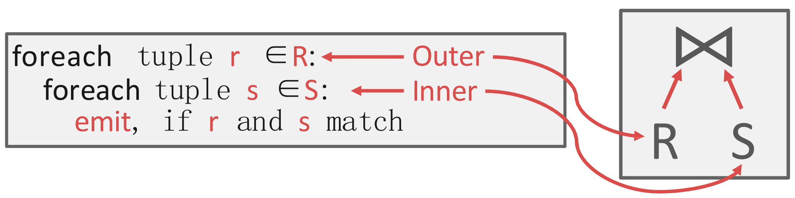
- 그냥 nested loop 으로 두 테이블을 sequential scan 해서 match 되는 것을 찾는 것
- 이때의 IO count 를 계산해 보자.
- 은 개의 page 로 구성되고 table 전체는 (tuple per page 가 아님!) 개의 tuple 을 갖고 있고
- 는 개의 page 로 구성되고 개의 tuple 를 갖고 있다고 할때
- 은 한번만 읽으면 되니까 번의 IO 가 발생하고,
- 는 의 tuple 마다 sequential scan 을 해야 하니까 번이 필요하다.
- 따라서 IO count 는 이 되는 것.
Block Nested Loop
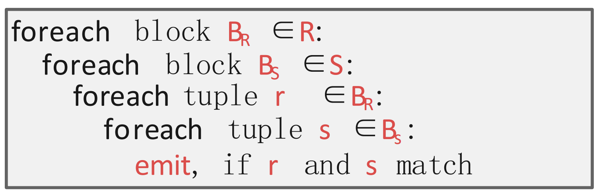
- 이때는 tuple 단위로 비교하는게 아닌 block 단위로 비교하는 방식이다.
- 여기서 block 은 “1개 이상의 page” 라고 이해하면 된다.
- 그래서
- Outer table 의 block 을 buffer 에 올리고
- Inner table 의 block 을 buffer 에 올리고
- 두 block 의 모든 tuple 을 전부 훑으며 matching tuple 이 있는지 찾고 (찾으면 emit)
- 두 block 의 모든 tuple 을 전부 소진한 후에는 inner table 의 다음 block 을 buffer 에 올리는 방식이다.
- 따라서 만약 두 block 의 사이즈가 각각 1 page 라면, 은 1번의 full scan 이 발생하니까 번의 IO 가 발생하고, 는 의 page 마다 full scan 이 발생하니까 번의 IO 가 발생한다.
- 결과적으로 IO 는 번
- 정리하면 이기 때문에, 보다 이 작아지는게 IO 를 줄이는데 유리하다.
- 즉, outer table 의 사이즈가 작은 것이 유리함.
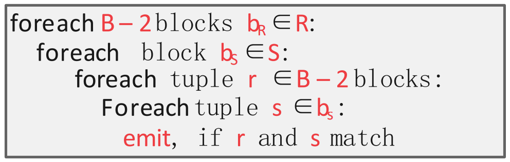
- 이때, buffer 사이즈가 일때의 전략을 생각해 보자.
- 의 공식을 다시 한번 생각해 보자. 모든 값들을 변수로 놓아 라고 한다면,
- 는 outer table 을 full scan 하는데 필요한 IO 이다. 따라서 이것은 buffer size 와 관계 없이 이다 ().
- 는 inner table 을 full scan 하는데 필요한 IO 이다. 이것도 buffer size 와 관계없이 이다 ().
- 그럼 는 inner table scan 의 횟수이다. 만약 개의 buffer 중 개를 outer table scan 에 사용한다면, outer table 의 page 개를 올린 다음 그것을 가지고 inner table 을 full scan 할 것이다.
- 따라서 가 될 것이기에, 전체 () 가 작아지기 위해서는 가 최대가 되어야 한다.
- 이때의 의 최대값은 이다. 왜냐면 inner table 을 담을 buffer 최소 1개와 결과를 저장할 buffer 최소 1개가 필요하기 때문.
- 따라서 위와 같은 알고리즘이 나오게 되는 것이고, 이때의 IO count 는 가 된다.
- 근데 만약 가 무진장 커서 라면?
- 따라서 이때의 IO count 는 이 되어 아주 작아진다.
- NLJ 는 언뜻 보기에 비효율적인 것 처럼 보이지만, 여전히 사용되는 이유가 여기에 있다: 만약 buffer size 가 아주 크다면, 이 방식으로 NLJ 를 돌리는 것이 더 빠를 때도 있기 때문.
- 마찬가지의 이유로, outer table scan 에 최대한 많은 buffer 를 할당하는 것이 효율적이다.
Index nested loop join
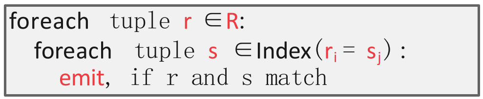
- NLJ 의 가장 큰 약점은 반복적으로 inner table 을 scan 해야 한다는 것이었다.
- 하지만 그렇지 않아도 된다면? 우리는 이미 sequential scan 의 을 효율적으로 줄일 수 있는 자료구조를 알고 있다: 바로 index.
- 따라서 index 를 활용하면 outer table 의 tuple 하나와 match 되는 inner table 의 tuple 을 찾는 것을 으로 줄일 수 있고, 이것이 바로 Index Nested Loop Join 이다.
- Primary index 를 그대로 사용하면 좋긴 하지만, 만약 join attribute 가 PK 가 아니라면 새로 build 해야 하는 overhead 가 있다.
- 따라서 이렇게 index build 에 필요한 IO 까지 감안했을 때 Index NLJ 이 더 좋다면, 이것을 사용하게 되는 것.
- Index search overhead 가 constant 라고 했을 때, Index NLJ 의 IO count 는 가 된다.
Sort-Merge Join, SMJ
- 이놈은 match tuple 을 고르는 과정에서 sorting 을 이용하는 방식이다.
- 크게 (1) Sorting, (2) Merging 두 phase 로 나뉜다.
- 근데 (1) Sorting 은 이전에 배운 External sorting 을 그대로 사용하면 되므로 여기서는 생략하고, (2) Merging 만 살펴보자.
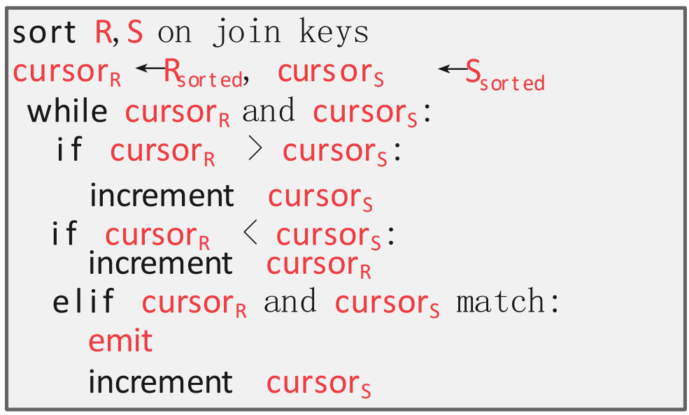
- 알고리즘은 two-pointer 를 사용한다.
- 우선 outer, inner table 모두에 첫번째에다가 pointer 를 둔다.
- 그리고 다음의 방식으로 pointer 를 움직인다.
- 만약 outer table pointer 가 더 크다면, inner table pointer 를 움직인다.
- 만약 inner table pointer 가 더 크다면, outer table pointer 를 움직인다.
- 만약 match 된다면, emit 하고 inner table pointer 를 움직인다.
- 다만 여기에는 함정이 하나 있다. 그건 아래 예시에서 알아보자.
Example
- 예시를 보고 이해하자.
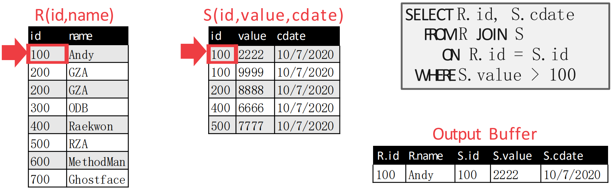
- 처음에는 첫번째 tuple 에 pointer 를 둔다.
- 그리고 이때에는 두 pointer 가 match 되기 때문에, emit 한다.
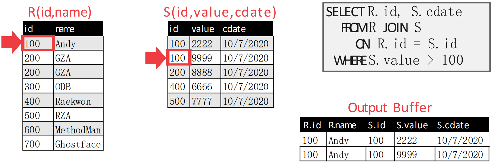
- 두 pointer 가 match 되기 때문에, inner table pointer 를 움직인다.
- 이때에도 두 pointer 가 match 되므로 emit 한다.
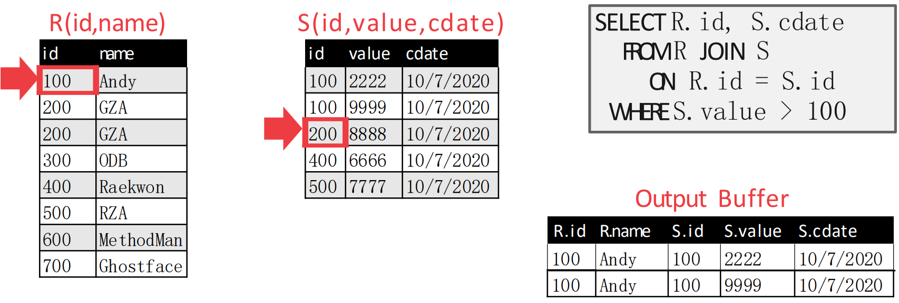
- 직전에도 match 가 되었기 때문에, inner table pointer 를 움직인다.
- 근데 이번에는 inner table pointer 가 더 크기 때문에, outer table pointer 를 움직이면 다음처럼 된다.
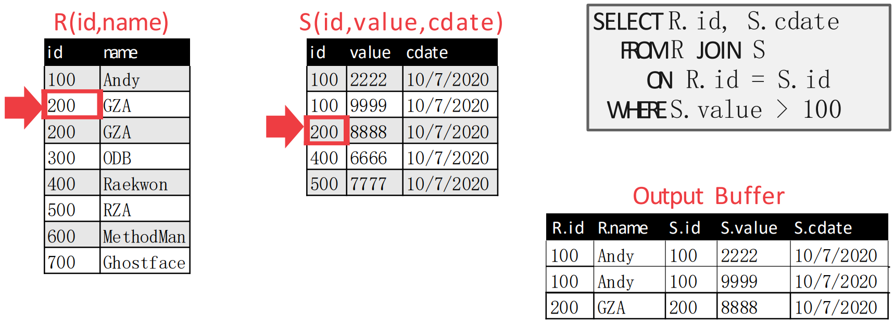
- Outer table pointer 를 움직였더니 match 되었다. 따라서 emit 하고 inner table pointer 를 움직인다.
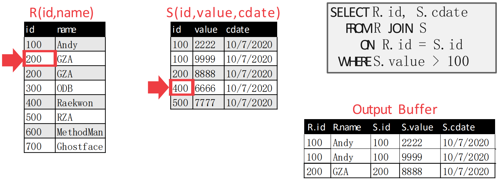
- 움직였더니 inner table pointer 가 더 커졌다. 따라서 이번에는 outer table pointer 를 움직인다.
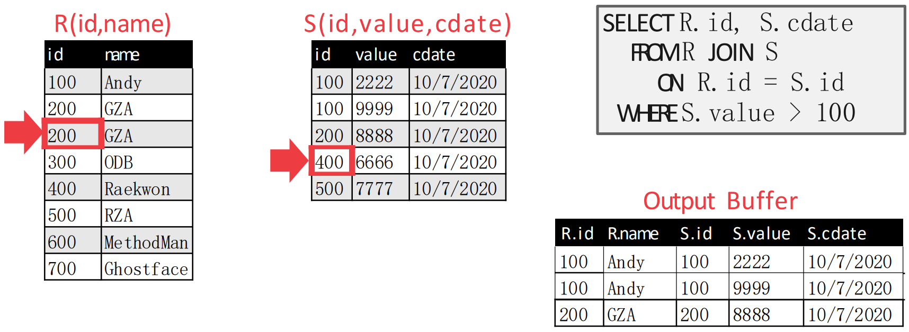
- 여기가 위에서 말한 함정이다.
- 원래의 알고리즘 대로라면, 위 상황에서도 outer table pointer 가 하나 움직여
{300,ODB}로 가야 한다. - 근데 그렇게 하면
{200,GZA,200,8888}이 누락된다.- 위의 예시에서는 에
{200,GZA}가 두개 있어서 헷갈릴 수는 있는데, 어쨋든 의 3번째 record 와 의 3번째 record 가 match 되었어야 했는데 이 알고리즘은 그것을 그냥 지나치는 셈.
- 위의 예시에서는 에
- 따라서 match 가 되어 (1) inner table pointer 를 움직였을 때 값이 달라지고, 뒤에어 (2) outer table pointer 를 움직였을 때 값이 동일하다면 다시 inner table pointer 를 위로 올린다.
- 원래의 알고리즘 대로라면, 위 상황에서도 outer table pointer 가 하나 움직여
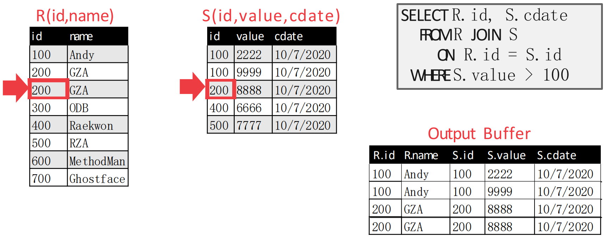
- 즉, 이렇게 된다는 것.
- 이후에는 다시 inner table pointer 를 움직이고, outer table pointer 도 움직이는 것을 반복한다.
- 그럼 머리로 생각해보면 inner table pointer 이동 -> outer table pointer 이동 -> outer table pointer 이동의 순서대로 움직여 다음처럼 된다.
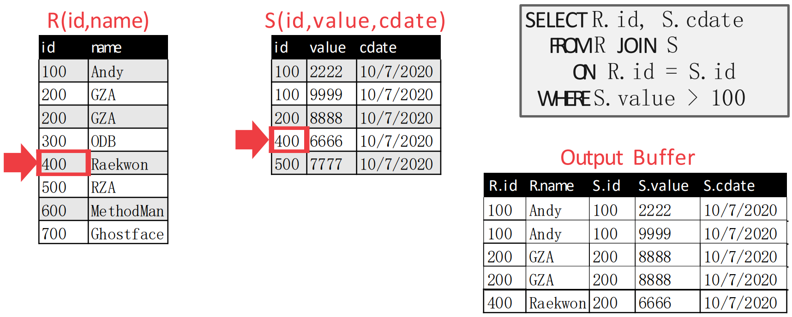
- 이후의 상황은 말 안해도 알겠쥬?
- Inner table pointer 이동 -> outer table pointer 이동 -> emit -> inner table pointer 이동
- 까지 하면 아래처럼 된다.
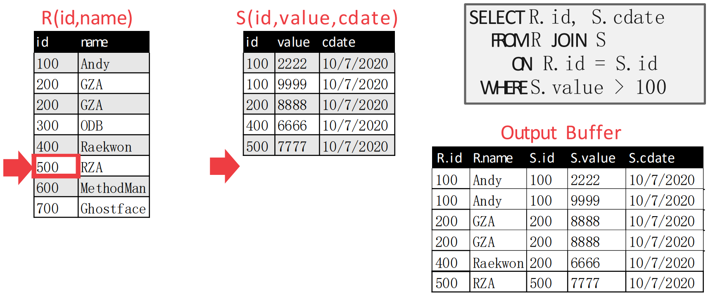
- 이제 는 끝났기 때문에 종료되는 것.
IO Count
- 그럼 이때 IO count 는 얼마일까.
- 일단 external sorting 의 IO count 가 인 것을 기억한다면,
- sort:
- sort:
- Merge: (각각 sequential scan 하기 때문)
- 가 되고 총 IO 는 저 셋을 전부 합한 값이 된다.
Best when, Worst when
- 일단 SMJ 를 사용하기 가장 좋은 때는
- JOIN attribute 가 PK 여서 이미 sorting (index 가 있기 때문에) 된 경우나
- Query 에
ORDER BY가 들어가 있는 경우처럼 어차피 sorting 을 해야 하는 경우이다.
- 그리고 가장 안좋은 때는 양 table 의 JOIN attribute 의 값이 전부 동일한 경우이다.
- 이 경우에는 마치 NLJ 처럼 작동하는데, 추가적으로 sorting overhead 까지 추가되기 때문에 NLJ 보다도 안좋아진다.
- IO count 는:
Hash Join, HJ
- Exact match 를 위해서는 hash table 이 일반적으로 좋잖아? 그래서 hash 를 이용한 join 알고리즘이 있는데 이것이 Hash Join 이다.
Basic Hash Join
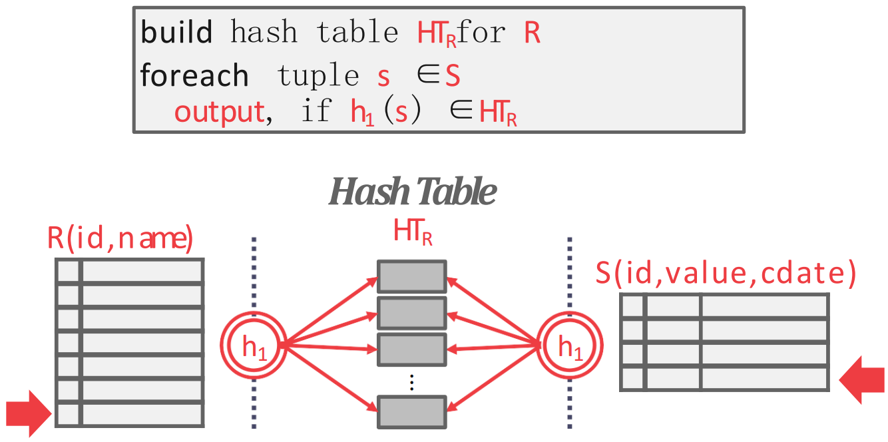
- 기본적인 hash join 은 두 단계로 나뉜다.
- Build: outer table 을 이용해 JOIN attribute 를 hash func 에 통과시켜 하여 hash table 을 만든다.
- Probe: innter table 의 각 tuple 에 대해, 동일한 hash func 를 통과시켜 해당 hash table entry 로 간 후 여기서 matching 되는 애를 찾는다.
- 즉, hash func 를 이용해 problem size 를 hash collision count 만큼으로 줄여 matching overhead 를 줄이는 것이 가장 핵심이다.
- Hash partition 내에서 찾을 때는 hash table implementation 에 달린 것 같다. 즉, collision 을 어떻게 처리하는지는 어떻게 구현하기에 달린듯.
Hash Table Content
- 이때 hash table 에 담기는 내용은:
- 일단 key 는 당연히 JOIN attribute 이다.
- Value 는 구현하기 나름이다.
- Value 는 위에서 말한 materialization 에 따라 달라진다고 생각하면 된다.
- Early materialization 처럼 table content 전체를 모두 가지고 있을 수도 있다.
- 당연히 이때는 early materialization 장단점을 고스란히 가져간다: 차지하는 용량은 크지만, 추가적인 IO 는 없다.
- 아니면 late materialization 처럼 tuple identifier 만 가지고 있을 수도 있다.
- 여기서 tuple identifier 는 RID 일 수도 있지만, query plan tree 에서 child operator 가 emit 한 tuple 을 고유하게 식별할 수 있는 것이라면 뭐든 가능하다.
- 마찬가지고 late materialization 의 장단점을 그대로 가져간다: 용량은 적지만, 추가적인 IO 가 수반될 수 있다.
- 따라서 columnar 에 적합하고 JOIN selectivity 가 낮을수록 좋다.
- Early materialization 처럼 table content 전체를 모두 가지고 있을 수도 있다.
Probe Phase Optimization: Sideways Information Passing
- Hash table 을 통해 problem size 를 hash collision count 까지 줄였다고 하더라도, 그래도 hash partition 내에서 찾는 것의 overhead 가 있긴 하다.
- 따라서 이것을 줄이고자 build phase 에서 hash table 에 더불어 Bloom filter 도 만드는 optimization 이 Sideways Information Passing (SIP) 이다.
- 이것이 좋은 이유는 Bloom filter 에는 보통 여러개의 hash func 를 사용해 그냥 hash table 보다는 collision 이 덜 발생하고,
- Bloom filter 의 사이즈는 보통 Cache line 에 들어갈 정도로 작기 때문에 공간도 많이 안먹고 속도도 빠르다.
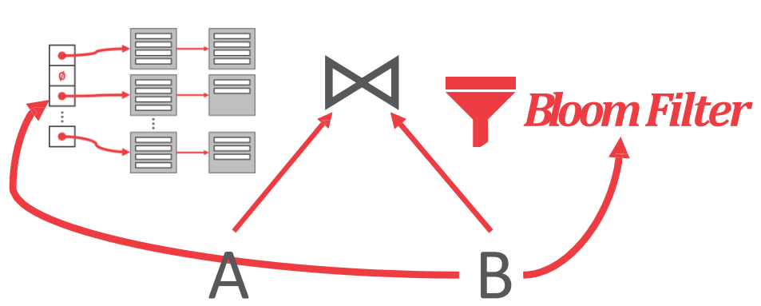
- 이 그림이 좀 바보같긴 한데, 그래도 이걸로 설명해보면
- 일단 왼쪽의 hash table 은 로 만든 것이고, 오른쪽의 bloom filter 도 로 만든 것이다.
- 그리고 를 probing 할 때는, 이 bloom filter 를 먼저 봐서 해당 key 가 hash table 에 있는지 찾고, 있다면 그제서야 hash table 을 찾으러 가는 것.
Cost Analysis for Basic Hash Join
- 일단 external hashing 을 생각해 보면, 개의 buffer 에 대해, 개의 partition 이 생긴다 (input buffer 하나 제외).
- 그리고 각 partition 의 크기는 보다 작아야 한다.
- 왜냐면 probing 시에 partition 하나를 다 훑어야 하기 때문에, partition 전체가 buffer 에 올라와 있어야 하기 때문.
- 물론 뭐 swap in-out 을 할수는 있겠지만 그럼 너무 느려지잖아?
- 그리고 각 partition 의 크기는 보다 작아야 한다.
- 그래서 이 basic hashing 으로 커버할 수 있는 table 의 사이즈는 이다.
- 반대로 생각하면, page 를 가지는 table 을 위해서는 buffer 가 대략 개는 필요하다는 것.
GRACE Hash Join
- GRACE hash join 은 hash table 두개를 사용하는 방법이다.
- 일본의 동경대에서 처음 개발한 방법이라고 한다.
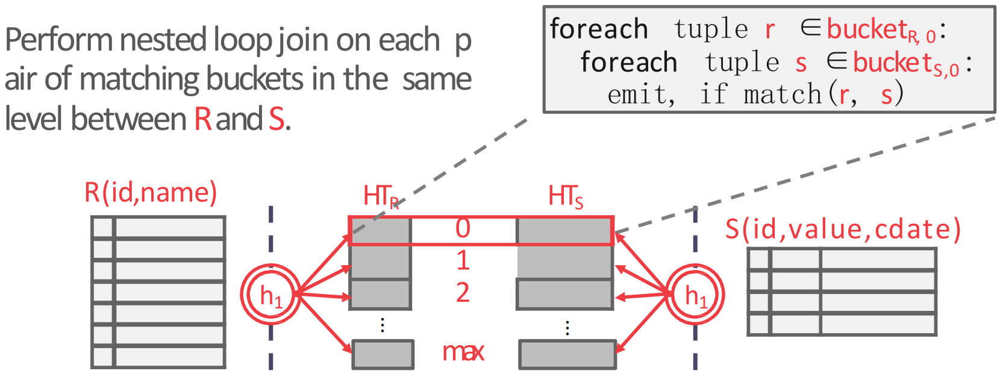
- 방법은 동일한 hash func 를 가지고 동일한 크기의 hash table 을 outer, inner table 모두에 대해 build 한 후
- 동일 level 의 hash partition 끼리 NLJ 를 하는 것이다. 2
Recursive Partitioning
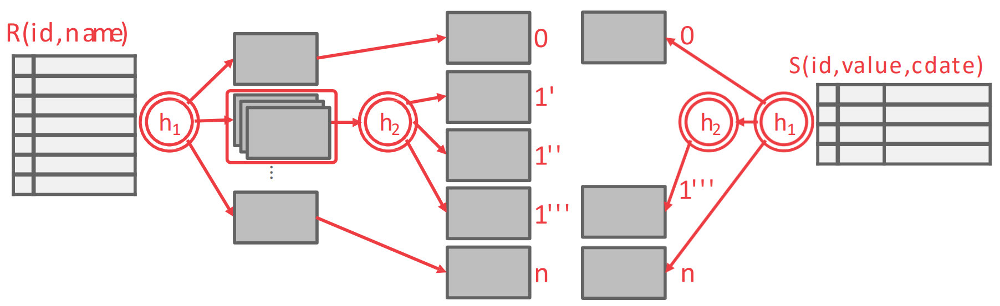
- 위에서 말한 table size 와 연관된 것인데, hash partition 의 사이즈가 너무 커져서 개의 buffer 에 전부 들어가지 못한다라고 한다면 여기에 또 다른 hash func 를 적용해서 nested hash table 을 만든다.
- 그리고 반대편의 hash partition 에도 (여기는 보다 작다고 할 지라도) 마찬가지의 hash func 을 하나 더 사용해서 nested hash table 을 만든다.
- 그 다음 동일하게 같은 level 끼리 NLJ 를 하는 방법이 Recursive Partitioning 이다. 3
IO Count
- GRACE Hash Join 에서는 총 번의 IO 가 필요하다. 왜냐면:
- 양쪽의 table 을 partition 낼때 읽고 () 쓰고 ()
- Probing 할 때 또 읽고 ()
Static, Dynamic Hash
- 만약에 outer table 의 크기를 이미 알고 있다면, static hash table 을 build 하는 것이 overhead 면에서 더 좋다.
- 근데 그렇지 않을 수도 있기 때문에, 이때는 어쩔 수 없이 dynamic hash table 을 사용해야 한다.
Join Comparison
- 다음의 IO count 를 기억하자.
| ALG. | IO COST |
|---|---|
| Simple NLJ | |
| Block NLJ | |
| Blobk NLJ (Big Buffer) | |
| Index NLJ | |
| SMJ | |
| HJ (GRACE) |
- 대표주자들을 생각해 보면,
- 일단 buffer 가 무쟈게 큰 경우 () 에는 Block NLJ 가 좋다: 이기 때문.
- 만약 어차피 sorting 을 해야 된다거나, sorting 이 이미 되어 있다면 SMJ 가 좋다: 가 빠지기 때문.
- Non-uniform data 의 경우에도 sorting 이 좋다고 한다. 4
- 그도 아닌 일반적인 경우에는, GRACE HJ 가 좋다.